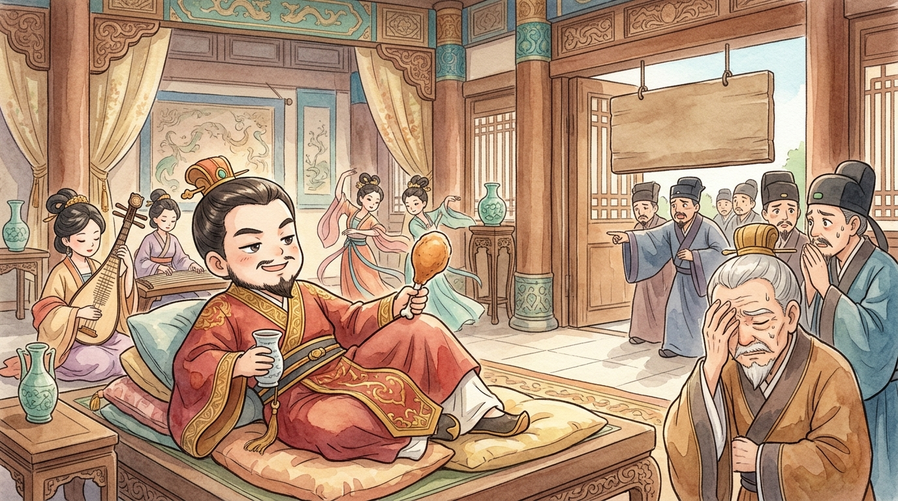
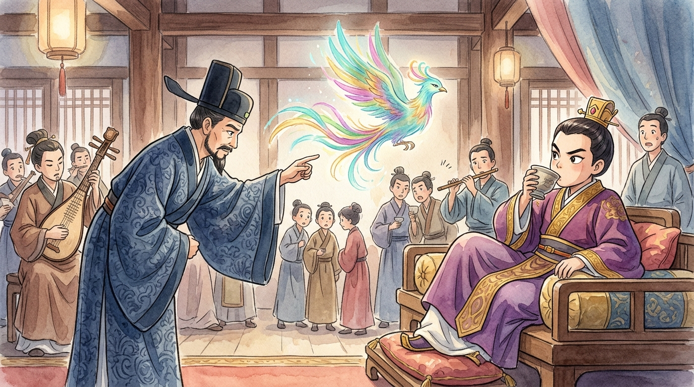
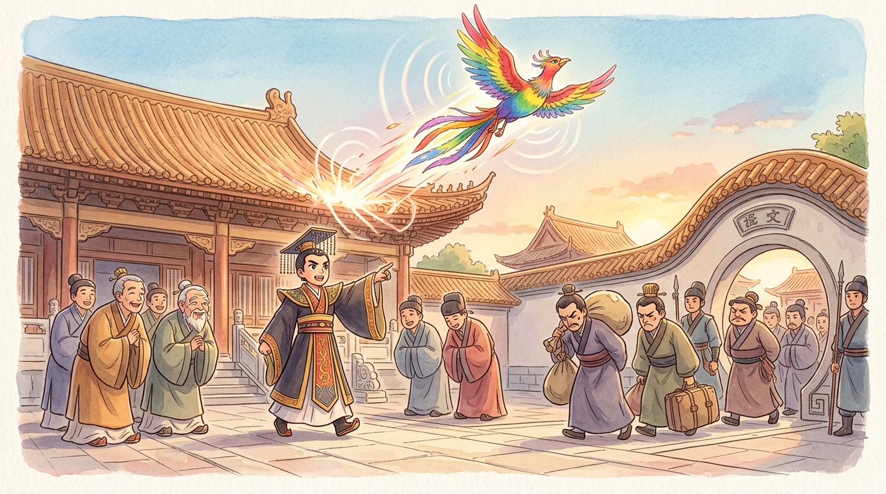

Ahem. Tweet. Allow me to introduce myself: I am the most famous bird in Chinese history, and I don't even exist. Confused? Excellent — all the best stories start that way. I was born inside a riddle, more than 2,600 years ago, in the great southern kingdom of Chu (楚)1 — and my story is about a king everyone thought was a lazy fool. Everyone was wrong. Deliciously, spectacularly wrong.
Three years of parties
When young King Zhuang (楚莊王) came to the throne, his kingdom held its breath. New kings usually announce grand plans, appoint new ministers, maybe invade a neighbour before lunch. King Zhuang announced… a banquet (宴會). Then another. For three whole years he hunted by day, feasted by night, listened to music with a wine cup in one hand and a drumstick (the chicken kind) in the other — and issued not one single royal order.
The kingdom, meanwhile, wobbled like a table with one short leg. Some ministers grew lazy, others grew sneaky; taxes wandered into the wrong pockets; neighbouring states began eyeing Chu's borders the way I eye a dropped dumpling. The honest ministers despaired. And here's the truly wicked part: outside his banquet hall the king hung a sign — "Whoever dares lecture the king shall be put to death."
Now, put yourself in a minister's sandals. Your king is partying the kingdom into a ditch, and complaining about it is illegal. What do you do? Most people did nothing. But a minister named Wu Ju (伍舉) had an idea. You cannot punish a man for asking about... a bird.

The riddle that created me
Wu Ju strolled into the banquet hall, bowed low, and said: "Your Majesty, I don't come to lecture — I come with a riddle (謎語) I cannot solve." The king, who liked games far more than lectures, waved him on. And Wu Ju said:
And POOF — there I was. A bird made of words, glittering in mid-air between a minister's courage and a king's secret. Every soul at that banquet understood instantly who the "bird" really was. The music stopped. The wine cups froze halfway to mouths. Would the king call the executioner?
The king looked at Wu Ju for a long, long moment. Then he smiled, and gave the answer that made me immortal:

Why sit silent for three years?
But — tweet tweet — here is the question you should be asking: what was the king actually DOING for those three years? Losing time? No, little reader. Watching (觀察).
Think about it from a young king's perch. He inherited a court full of powerful old ministers he did not choose. Which ones were loyal? Which were flatterers? Which were quietly stealing? If he acted like a strong king from day one, everyone would behave perfectly — while he was looking. So instead, he pretended (假裝) to be a fool. He made himself... safe to ignore. And then he watched what everyone did when they believed the king wasn't watching. The lazy revealed their laziness. The greedy (貪心) grew bold and careless. And the truly honest (誠實)? They were the ones who kept working anyway — and the bravest of them, like Wu Ju, risked death to wake him. Three years of parties bought him three years of TRUTH, the rarest treasure a ruler can collect.2
Still, even after the riddle, the feasts continued for some months — one last test, perhaps. Until the minister Su Cong (蘇從) marched in with no riddle at all, tears on his face: "Punish me if you must, but the kingdom is crumbling!" The king rose from his cushions and asked, "You know the penalty — why come?" And Su Cong answered, "If my death wakes Your Majesty, I die happy." That, said the king quietly, was what he had been waiting to hear.
The cry
THEN I flew. Oh, how I flew. In the space of a season, the "lazy" king reorganized the entire kingdom — and here is the marvel: he already knew exactly what to do, because he had spent three years secretly taking notes. Corrupt ministers: dismissed, hundreds of them, each one named precisely. Honest men like Wu Ju and Su Cong: promoted to the highest posts. The army: retrained. The laws: renewed. Neighbouring bullies who had crept onto Chu's borders: firmly escorted home.
Chu rose like a morning sun. In the years that followed, King Zhuang led his kingdom to greatness and became one of the legendary Five Hegemons of the Spring and Autumn era (春秋五霸) — the superstar rulers of the age.3 He grew so mighty that he once marched his army to the gates of the royal capital itself and casually asked about the weight of the sacred bronze cauldrons — the symbols of rule over all China — a cheeky question so famous it became its own idiom (問鼎中原, "asking about the cauldrons"). The fool of the banquet hall turned out to be the sharpest ruler of his generation. One cry — and the whole world jumped.

And now, 2,600 years later, whenever someone quiet suddenly does something amazing — the shy classmate who wins the speech contest, the quiet teammate who scores the winning goal — people in China still say she is 一鳴驚人: "one cry astonishes the world."4 So if the world hasn't noticed you yet, little reader, don't fret. Some of us sit on the hill a while, watching, learning, gathering our strength. Take it from the bird who waited three years: the sky remembers nothing about how long you sat — only how high you flew. Tweet. 🐦